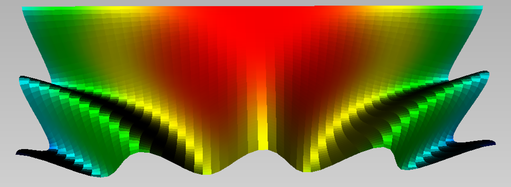

Parametric plots
Axl.parametric — FunctionCompute the parametric curve f: u -> [x,y,z] for u in the interval X.
c = parametric(u->[u,sin(u^2),cos(2*u)], 0.0 => 2.0*pi, 1000; field=DistField(0.0,0.0,0.0))
@axlview cCompute the parametric surface f: (u,v) -> [x,y,z] for u in the interval X, v in the interval Y.
s = parametric((u,v)->[u,v,cos(2*u*v)], 0.0 => 2.0, -pi => pi, field=DistField(0.0,0.0,0.0))
@axlview s
Axl.polar — FunctionPlot the radius function r = f(x,y,z) on the unitary sphere.
polar((x,y,z)->cos(x*y*z+1.0), 200, field=DistField())